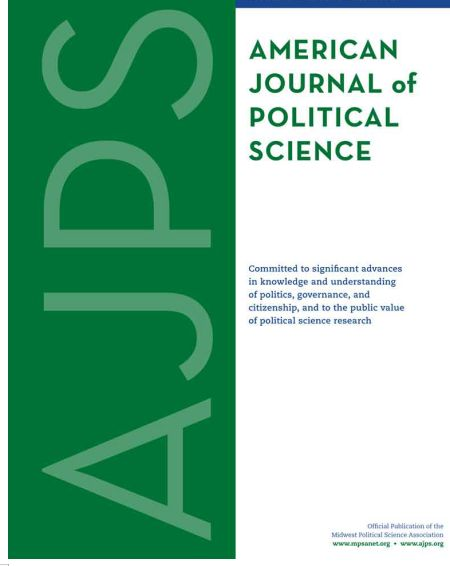
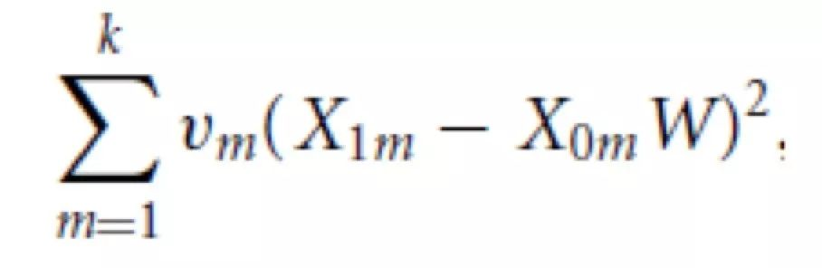
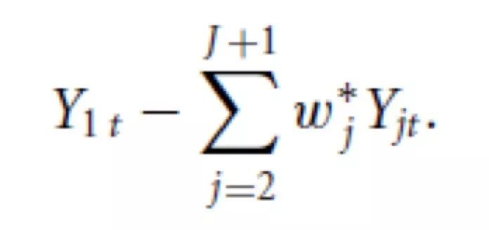
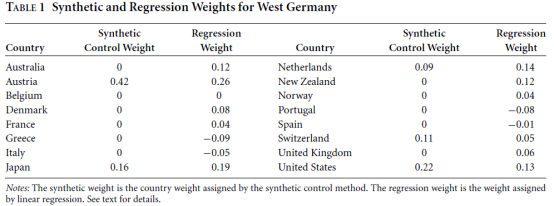
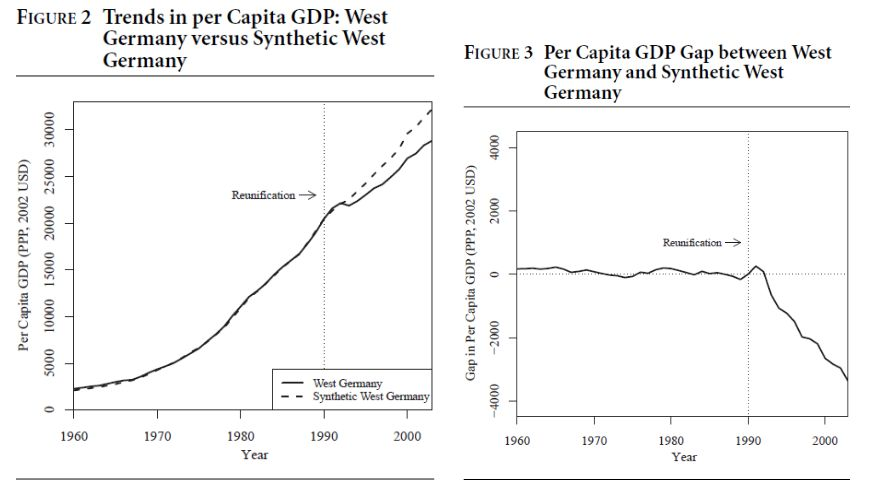

收录于合集

作品简介
【作者】 Alberto Abadie，现任麻省理工学院经济系教授，主要研究兴趣为计量经济学和因果推断，他也是本文使用的合成控制法的主要提出者。Alexis Diamond，哈佛大学政府系博士，曾就职于国际金融公司（International Finance Corporation）。Jens Hainmueller，现任斯坦福大学政治学系教授，主要研究兴趣为移民与难民、统计方法、政治经济学以及政治行为等
【 编译】 兰星辰（国政学人编译员，北京大学）
【排版】 高佳美
【 来源 】 Abadie, A., Diamond, A., & Hainmueller, J. (2015). Comparative politics and the synthetic control method. American Journal of Political Science, 59(2), 495-510. __
期刊介绍

美国政治科学期刊（American Journal of Political Science, AJPS）是创刊于1957年的政治科学领域综合类期刊，也是中西部政治协会（MPSA）的官方期刊。2018年的影响因子为4.354，在176种政治科学期刊中排名第二。
比较政治与合成控制 ****
Comparative politics and the synthetic control method ****
内容提要
近年来，政治学界逐渐对搭建定性方法和定量方法相互沟通的桥梁的必要性达成广泛共识。本文介绍了在比较政治学研究中能够沟通定性和定量方法的合成控制法（Synthetic
Control
Methods），认为合成控制法提供了一个在比较案例研究中选择比较单元(unit)的一个系统的方式。这一系统化避免了大样本回归分析中的外推问题（extropolation），能够在不排除定性方法的情况下在小样本比较案例研究中进行定量推断。本文以估计两德统一对西德经济影响为例对合成控制法进行了应用。
**
** 文章导读
如何基于Rubin的反事实因果推断的框架通过观测数据进行因果推断，是因果推断的重点和难点。除工具变量、差分法、倾向值得分匹配、过程追踪、定性比较分析等常用方法外，合成控制法也得到了越来越多的关注。该方法已经较为广泛地用于经济学研究（中文经济学文献可参考：刘甲炎,范子英.中国房产税试点的效果评估:基于合成控制法的研究[J].世界经济,2013,36(11):117-135），但是国内政治学界对该方法在政治学研究的介绍还比较少。特编译这篇介绍了合成控制法在比较政治小样本比较案例研究中的应用的文献，供各位学界同仁参考。另外，希望进一步了解合成控制法的读者除参考本文三位作者的相关研究外，《政治分析》（Political
Analysis）的另一篇更深入的、已经产生较大影响的文献也值得借鉴（Xu, Y. (2017). Generalized Synthetic
Control Method: Causal Inference with Interactive Fixed Effects Models.
Political Analysis, 25(1), 57-76. doi:10.1017/pan.2016.2）
一、 合成控制法的原理 ****
设想一个有J+1个单元（如国家）的样本，不失一般性，假定其中单元j=1是研究者关注的案例，而单元j=2到j=J+1都是潜在的比较案例。借用医学文献的概念，j=1被称为处理单元(treated unit)，即遭到干预（intervention）的单元。而其余的单元（j=2…J+1）组成了供体池（donor pool）（下文将其统一译为更容易理解也更常用的控制组control group，译者注）。由于控制组里的单元被用来近似关注案例的没有受到干预的反事实情况，所以控制单元必须是在研究的整个时间段，与处理单元有着相同的结构过程（structural process）但没有受到干预的单元。在本文的研究中关注的案例是西德，而选取的其他的16个OECD国家组成控制组。进一步，假定样本是一个平衡面板，即所有的单元在整个T时段的每个节点都同时被观测（t=1,…,T）。T0表示干预前的时间段的数量， T 1表示干预后的时间段的数量，两者均为正数，总时间段T是两者之和。而研究的目的在于测量干预对研究者关注的处理单元的某个变量的影响。合成控制法的思路是：与使用单个控制单元近似相比，处理单元被干预前的特点可以被控制组内没有被干预的单元的组合（线性组合）来更准确的近似。标准语言表述为：合成控制需要找到一个合理的(J x 1)的权重向量 W __ = ( w 2 ,… , __w J __ +1)’（0≤wj≤1， w 2+…+ w J __ +1=1）来组合控制组。用X1来表示一个研究者尽可能希望近似的包含处理单元被干预前k个变量的k×1向量，用X0表示包含与处理单元相同的k个变量的J个在控制组里的控制单元组成的k×J矩阵。研究者需要找到合成控制W*，使得X1−X0W最小。找到合成控制的方法是先定义m=1，…,k，X1m是处理单元第m个变量，X0M是1×J的，包含J个控制单元第m个变量的向量。研究者选择一个权重vm根据第m个变量的重要性赋予这个变量权重，使得下式最小化（最小化的构造思路是类似欧氏距离，构造二次型进行数值求解，译者注）

在本文的实证部分，作者使用了交叉验证法（cross-validation method）来选择权重。在确定权重后，继续定义Yjt为单元j在时间t的结果（outcome），令Y1为T1×1的包含处理单元遭到干预后的结果的值的向量。类似的Y0定义为T1×J的包含控制单元的在干预发生后的结果的值的矩阵。则对于一个给定的在干预之后的时间段t（t≥T0），在这个时间段的对处理效应的合成控制估计量为

三位作者之前的研究Abadie, Diamond, and Hainmueller (2010)说明了干预前的时间越长、合成控制就越能接近处理单元的变化轨迹、就越容易控制那些不能控制的因素对结果的影响，使得合成控制的估计量更加准确。目前Stata、R、Matlab软件都提供了使用合成控制法的包方便研究者使用（如R的Synth包）。同时本文指出，合成控制法与回归分析相比有优势。尽管回归法也使用控制单元的线性组合进行比较，但是回归法的问题在于它不能限制线性组合的系数，由于研究者只关心小样本的比较案例分析，回归导致了超出数据支持的外推（extrapolation）问题（对回归导致外推问题的数学说明可以参考原文。思路是尽管可以证明在反事实的框架下回归也可以视为对控制地区做了线性组合，得到的估计量也是权重之和为1的加权估计量，但是与合成控制法的权重都在[0,1]区间取值不同的是，由于回归对权重取值范围没有加以限制，因此回归法的权重可能出现负值或者超过1，这就导致了过分外推的问题）。
二、 使用合成控制法推断 ****
即使使用合成控制法得到一个数值很大的估计量的情况下，研究者也不应过早乐观，而需要进行检验。作者提供了两种进行安慰剂检验的方式。第一种称为“时间内安慰（in- time placebos）”，为了保证合成控制法估计的干预效果确实是干预带来的，研究者可以假定在干预的时间点前的某个时间干预发生，然后使用合成控制法进行估计，对比两者的估计量大小，如果差别不大甚至后者估计量大于前者，那么就可以认为估计出错。第二种称为“空间内安慰（in- space placebos）”，研究者可以人为地将干预视为发生在某个原来在控制组内没有被干预的控制单元上，将这个控制单元变为处理单元，再使用合成控制法，然后对比这两个估计量的差别。尽管在比较案例研究中，研究单元大多都是大的聚合单元（aggregate units）如国家和区域等，很少有单个单元可以单独成为控制单元，这使得组合控制单元的合成控制法可以派上用场。但本文提醒研究者不能滥用合成控制法，使用该方法需要注意的是：第一，需要小心地建立控制组，控制组不能被处理组遭遇的干预事件或者与干预事件相似的事件影响。在研究时间段内，控制单元也不能受到影响研究者关注的结果的因素冲击。控制单元数量不宜过多，且应该与处理单元的特征相似，否则可能导致过拟合（overfitting）的问题。第二，干预前的时间段应该有一定长度，因为合成控制的信度在于它需要在一个干预发生前比较长的时间段更精确地追踪处理单元的特征。在干预的影响随时间逐渐减少的情况下，该方法也需要干预后的时间段有一定长度。
三、 应用：两德统一的经济成本 ****
本文应用合成控制法估计了1990年10月两德官方宣布统一对西德的经济影响，这是研究政治一体化（political integration）的经济影响的绝佳案例。尽管许多研究试图检验统一的结果，但是西德付出的经济成本具体是多少这一问题在之前的研究中没有得到重视，本文是首次使用合成控制法虚拟了一个反事实的没有统一的合成西德，定量估算了统一对西德人均GDP的影响。本文建立了1960-2003年包括西德和澳大利亚、比利时、丹麦、英国、美国在内的16个OCED国家的人均GDP、国内投资占GDP的比例、接受中学教育的25岁以上的人口比例、工业增加值、供货膨胀率、贸易开放程度的面板数据集。本文首先把统一前的1971-1980年作为训练期（training period），把1981-1990年作为验证期（validation period），使用在训练期的估计值，计算出了能够在验证期最小化均方误差（root mean square prediction error）的权重向量作为权重进行合成控制，对比回归权重，得到如下图所示的结果。

使用合成控制后，作者发现了两德统一后西德付出的经济成本非常高，如下图所示，经过合成控制后，明显可以看出两德统一后西德的人均GDP与合成西德的差距扩大，本文发现从1990年到2003年，西德的人均GDP平均每年下降1600美元（约为1990年的8%），2003年合成西德的人均GDP比事实上的西德高12%。

随后作者又进行了上文提及的安慰剂检验并且采用不同的方式估计权重进行稳健性检验，作者又删除了控制组的一部分国家与原有结果进行对比，结果都与基准的合成控制法的结论相吻合。
四、 结 论 ****
****本文指出，合成控制法可以与小样本比较案例研究结合，研究者可以在进行深入的定性研究选择样本和变量的基础上使用合成控制法进行定量推断。正如 Sidney
Tarrow所说，合成控制法是把“定性的肉融入定性的骨头（qualitative flesh on quantitative bones）”
_ ** _ ** _ ** _ 本文由国政学人独家编译推荐**__
扫下方二维码查看往期精彩
【战略研究】节点防御：美国在欧洲与东亚地区联盟体系的结构变化丨国政学人 第277期
【方法论衡】亚历山大·温特：国际关系中的建构关系与因果关系丨国政学人 第283期
【中美关系】江忆恩：秩序世界下的中国：反思中国国际关系中的合规与挑战丨国政学人 第284期
【新刊速递】第09期| International Relations of Asia-Pacific Vol.19,No.3
【新刊速递】第10期 | International Studies Review, Volume.21, No.3, 2019
【新刊速递】第11期|Cooperation and Conflict, Vol. 54, No. 4, 2019
【新刊速递】第12期 | International Affairs, Vol.95, No.6，2019
分类导览 1
分类导览 2

点“在看”给我一朵小黄花